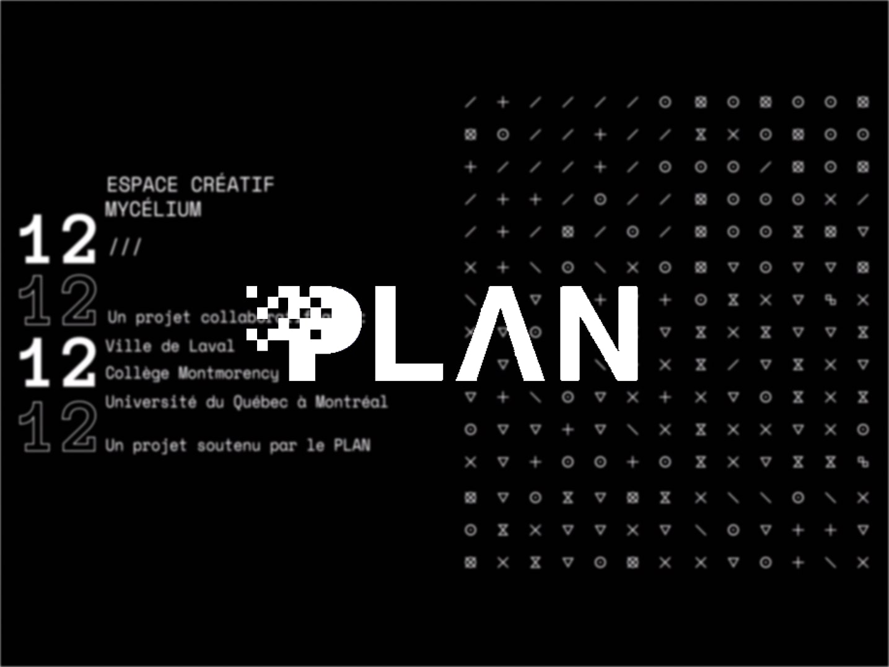
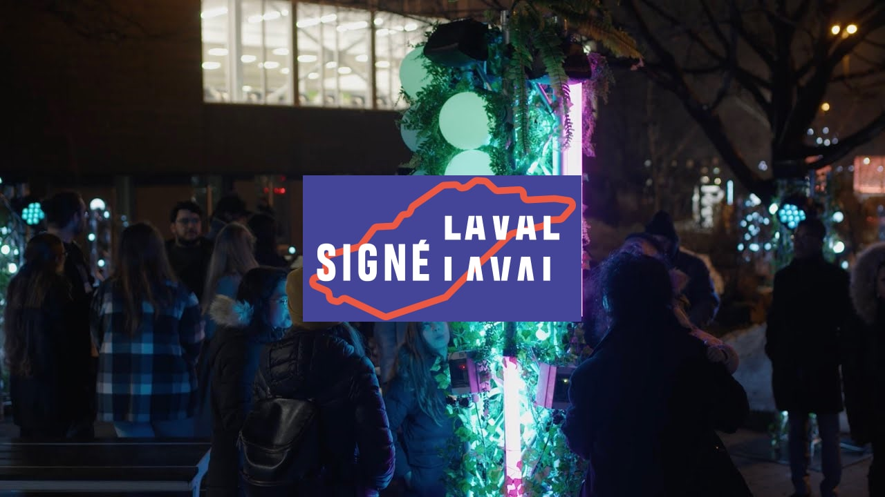

Edria est une œuvre interactive qui explore la dualité entre la technologie et la nature à travers un univers féerique centré autour d'un monolithe. Cette installation évolue à travers trois états distincts : un état de sommeil, caractérisé par des lumières ternes et bleutées en l'absence de spectateurs ; un état d'éveil, coloré et réactif à la présence humaine avec des lumières et des sons assignés par une technologie lumineuse spécifique de chaque côté de l'œuvre ; enfin, le climax, atteint lorsque quatre personnes se positionnent de chaque côté de l'œuvre, déclenchant une animation lumineuse et musicale d'environ une minute.
Documentation
Notre oeuvre fait alusions à l'industrialisation en incorporant des structures métalliques et artificiel dans l'espace. Ces structures sont recouvertes de fausses plantes, qui viennent également contraster avec le climat dans lequel l'oeuvre sera déployée, pour représenté le désir de l'humanité de cacher sa destruction par la nature. Les logiciels utilisé pour faire cette installation était, FL Studio pour la création d'ambiances audio et MadMapper pour le mapping vidéo des lumières. Pour permettre aux différents logiciels de se communiquer entre eux, l'équipe à transféré les informations envoyé à travers un signal Micro OSC UDP
En tant que co-réalisateur et concepteur sonore du projet "Edria", ma mission était de donner vie à l'univers que nous avons créé à travers une bande sonore reflétant chaque état de l'installation. J'ai conçu cinq courts sons distincts pour chaque côté de la tour, chacun attribué à un thème spécifique ou à un côté particulier du poteau central, ainsi qu'un son plus long qui reste activé tant qu'une personne demeure à proximité de la tour. Lorsqu'une personne est détectée près de la tour, ces sons sont joués de manière aléatoire. Pour l'état de sommeil, j'ai opté pour une douce respiration, évoquant un monde endormi. L'état d'éveil, quant à lui, devait être caractérisé par la vie, l'activité, avec des sons réactifs parfaitement synchronisés, créant un écosystème sonore équilibré. Lors du climax, j'ai introduit une composition intense et rythmée, symbolisant la culture, la présence humaine et son impact sur l'environnement. Cette composition est soigneusement synchronisée avec l'animation lumineuse, marquant ainsi le point culminant de l'expérience.
L'équipe qui a rendu ce projet possible comprend Loic Delormes, Meryem Berbiche, Dominic Roberts, Elwin
Durant et Gabriel Lemieux.
Notre projet a bénéficié du soutien à travers une bourse fournie par  "le PLAN ➡" (Pôle Lavallois d’Enseignement
Supérieur en Arts Numériques et Économie Créative) et a même suscité l'intérêt de médias locaux tels que 
"Signé Laval ➡"
Ambiance Sonore Générale (Mode Éveil)
(Lorsqu'une personne est détectée par l'un des capteurs)
Ambiance sonore (Climax)
(Lorsqu'une personne est de chaque côté du poteau central)
Année : 2023
Catégorie : Installation interactive